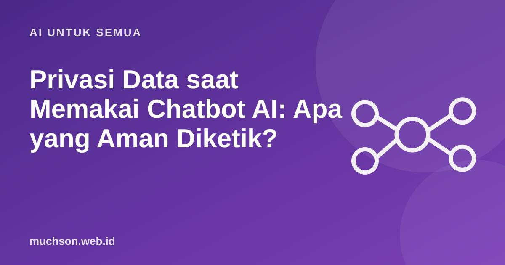

Beranda › Artikel › AI untuk Semua
AI untuk SemuaPrivasi Data saat Memakai Chatbot AI: Apa yang Aman Diketik?
Chatbot AI terasa seperti teman bicara pribadi, sehingga banyak orang menuliskan hal yang tidak akan mereka tulis di tempat umum. Padahal percakapan itu diproses oleh layanan pihak lain. Mari lihat apa yang perlu dijaga.

Ke mana teks Anda pergi?
Data yang sebaiknya tidak dimasukkan
Cara menyamarkan sebelum mengetik
| Asli | Samarkan menjadi |
|---|---|
| Budi Santoso, Jl. Mawar 12 Madiun | Seorang pelanggan di kota X |
| Gaji Rp12.500.000 di PT ABC | Gaji sekitar 12 juta di perusahaan menengah |
| Nomor KTP 3577... | [NOMOR IDENTITAS] |
| Email dari klien lengkap dengan nama | Email dengan nama diganti "Klien A" |
Periksa pengaturan akun
Tanggung jawab
Hukum perlindungan data pribadi di Indonesia mengatur pengelolaan data pribadi. Bila Anda mengelola data orang lain (pelanggan, siswa, pasien), Anda punya tanggung jawab menjaganya. Konsultasikan kebutuhan hukumnya bila usaha Anda mengolah banyak data.
Tanya jawab
Apakah mode "incognito" atau "chat sementara" benar-benar aman?
Fitur seperti itu biasanya mengurangi penyimpanan riwayat, tetapi tidak berarti data tidak pernah diproses. Baca penjelasan masing-masing layanan.
Apakah aman memakai chatbot di jaringan Wi-Fi umum?
Koneksi terenkripsi relatif aman, tetapi hindari memasukkan data sensitif di jaringan yang tidak Anda percaya.
Bagaimana cara menghapus riwayat percakapan?
Biasanya ada menu pengaturan akun untuk menghapus riwayat. Periksa pengaturan layanan yang Anda pakai.